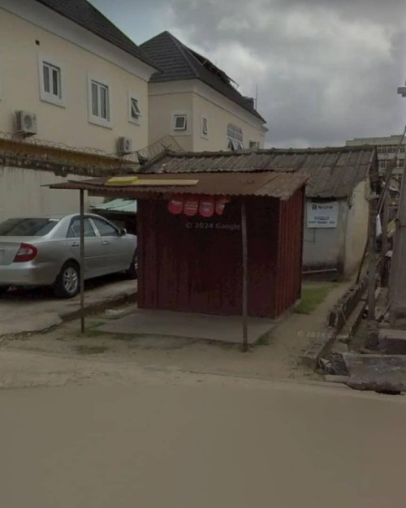

Rooted in Yaba.
I live on Moore Road in Yaba — one of Lagos’s buzzing hubs where tech, creativity, and community collide. It’s the kind of place where roadside suya meets startup vibes and there's always a story unfolding outside the window. Yaba is noisy, unpredictable, full of life — and it’s shaped a lot of who I’m becoming. It’s my everyday backdrop, and honestly, I wouldn’t trade it.